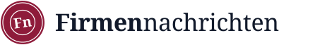

Das Sägezahndach der Fabrikhallen ist das Bild für Industrie, Mittelstand und Ruhrgebiet. Das Dach steht auf einer Nachrichtenspalte, so dass das Zeichen „Nachrichten aus den Betrieben“ erzählt. In der Branche nutzt das sonst niemand, und als Silhouette erkennt man es sofort, auch in 16 px.
Die Karteikarte mit Reiter stammt aus dem Handelsregister und der Akte. Unsere eigentliche Quelle wird damit zum Markenzeichen. Im weißen „F“ steckt der Anfangsbuchstabe, der Bordeaux-Reiter ist das wiedererkennbare Detail, und die Linie unter der Wortmarke greift den Reiter wieder auf.
Ein runder Stempel wie auf amtlichen Bekanntmachungen, leicht schräg gesetzt. Er wirkt geprüft und offiziell, beides passt zum Anspruch „Quelle und Freigabe“. Die Umschrift „Firmennachrichten · NRW · 2026“ kann später auch als Gütesiegel unter geprüften Meldungen stehen.
